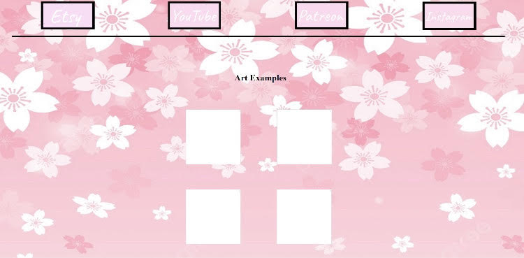

Projects outside of class
I have only done one actual project (using HTML) outside of class. I made an art commision website for my fiance who takes commisions. It's unfinished but I'm pretty proud of it, especially since I did it in like our first two or so weeks of class
The nav bar at the top leads to all their respective websites, they don't lead to her actual accounts on there cause I just put the homepage links as placeholders. The four white boxes in the middle were placeholders, clicking on them would take you to another page showing you a page of examples